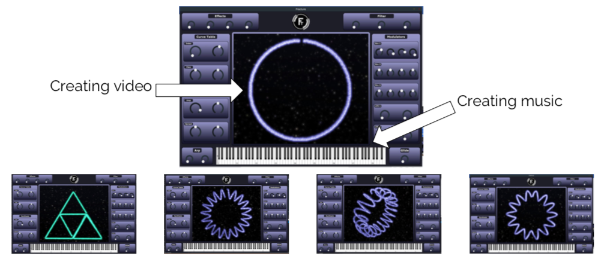

Mayeul Ledoré
Dossier de demande du STATUT AHN
Développement et recherche personnelle :
Je suis actuellement dans une démarche créative quotidienne ayant pour but une recherche intensive de connaissances, de questionnements et de réponses. Cette démarche se traduit par un 365-everyday challenge ayant pour but de créer une oeuvre chaque jour en ne tombant jamais dans la réplication/non créativité/habitude. C'est un défi inspiré par l'artiste Beeple.
Tout est consultable sur ma galerie instagram : https://www.instagram.com/abricobabricob/
Je découpe ma pratique graphique en 3 parties :
L'Exploration de l'espace latent.
J'entends par là l'étude de l'art par intelligence artificielle. Les problématiques et enjeux sont multiples autour de cette branche nouvelle d'art numérique. Il existe différentes techniques pour collaborer avec la machine que j'utilise, et d'autres que je développe. Mon objectif est simple, développer cette branche inscrite dans un tout nouveau courant que je nomme latentisme. La sensibilité peut-elle être codée ? Les machines peuvent réellement posséder une forme de sensibilité ?
“Computers are useless. They can only give answers.” Picasso (1881 - 1973)
Cette citation de Picasso est compréhensible remise dans le contexte technologique de l'époque. Mais il n'avait pas connaissance, par exemple, des méthodes de convergence par réseaux de neurones. Voici par exemple la formule d'apprentissage collaboratifs de deux réseaux de neurones (un générateur et un discriminateur dans l'architecture GAN).

Et, de cette formule, on peut générer de nombreuses images à l'aide de données d'entrainement. Ensuite, après de nombreux processus, on peut obtenir quelque chose d'intéressant, que l'on peut qualifier d'"oeuvres". Voici donc quelques exemples de mes oeuvres créées par ce processus :

Vésanie Extériorisée

Illumination de la perception

L'Homme contemplant l'Artistique Machine
Mais on peut aussi imaginer une autre utilisation de l'intelligence artificielle. Les possibilités sont multiples. Un autre exemple est le transfert stylistique. L'implémentation est différente et demande ici une image d'entrée (considérons "La nuit étoilée" de Vincent Van Gogh), une image d'entrainement (orange avec un certain relief). Puis on peut appliquer le style de cette dernière sur l'oeuvre. Voici un résultat possible :

Post impressionnisme machine
Ainsi, l'obtention d'un statut AHN peut être déja une brique supplémentaire pour ouvrir certaines portes. L'objectif à court terme est d'aller encore plus loin dans la conception de tels systèmes, à moyen terme ce serait plutôt d'exposer certaines oeuvres dans un cadre de sensibilisation, à long terme, ce serait d'expliquer pourquoi pas dans une conférence les différentes méthodes de travail que j'exerce mais aussi les problématiques que mes expérimentations m'ont amené à découvrir.
La 3ème dimension.
C'est l'élaboration d'un univers créé en 3D. De nombreux logiciels sont combinés pour arriver à mes fins. J'ai choisi cette technique graphique pour créer mon univers car elle apporte de nombreuses libertés dans la création. On peut par exemple obtenir un niveau de détail impossible sur une simple peinture, des éclairages calculés de façon réaliste ou non, une possibilité de sculpter tous ses personnages/objets. Il y a la possibilité d'animer aussi. Bref, dans l'ère du numérique, il m'a paru pertinent de choisir les techniques graphiques les plus modernes pour exploiter au mieux ma créativité. Voici quelques oeuvres :

Moony et les poussières d'étoiles

Synthèse géométrique

Dualité de l'intelligence machine
De nombreux objectifs de ce côté là, à court terme, il faut que je travaille ma technique dans la connaissance des logiciels pour aller encore plus loin dans la création. A moyen terme, c'est d'animer en utilisant un setup d'ordinateur plus puissant car c'est impossible avec ma configuration actuelle d'envisager créer des petits films 3D. A long terme, ce sont des projets d'installations.
L'image, une peinture déformable .
J'utilise très souvent la photographie pour exprimer une idée. Je peux donc les combiner pour exprimer un message, véhiculer une sensation. Voici quelques une de mes oeuvres à ce propos :

Perspective émotionelle sur regard abstrait

Manipulation (XXI)

Départ 1995 - Sang
La création est souvent portée sur la nature des images, la méthode d'association et la justesse du message. J'essaye aussi de travailler sur différentes palettes de couleur et sur le grain/texture de l'image. L'idée est toujours de considérer le média "image" comme la matière première d'un tableau.
J'ai décidé d'aller plus loin dans cette direction et considérer le média image jusqu'à sa construction et modifier sa nature (jusqu'à l'échelle de l'encodage, du bit). Ainsi, je peux vraiment détruire, éclater l'image pour la sortir complètement de sa signification initiale et l'utiliser à ma guise. Cette pratique s'intègre dans la branche du glitch-art. Voici quelques exemples à ce propos :

Un Sentiment de Plénitude

Amazonie datamoshée
L'objectif est de passer sur des formats vidéos et d'intégrer ces techniques sur des installations temps réel.
Développement communautaire :
Il y a deux ans, je me suis lancé dans les arts graphiques et j'ai commencé par la création de fractales. J'ai donc généré de nombreuses oeuvres basées sur des objets mathématiques infinis (qu'on peut d'ailleurs retrouver dans la nature parfois). En voici quelques unes :

Gravitation

Hippocampe

Spirales dorées
J'ai décidé d'aller plus loin et de lancer un projet de développement d'une communauté d'artistes autour cette catégorie d'art numérique appelé l'art fractal. Il serait trop long d'expliciter toutes les caractéristiques de cette branche. Elle est peu pratiquée et peu reconnue. Partant de ce constat, j'ai trouvé pertinent de créer la FDC (Fractal Designers Community). Cette démarche est inspiré du français MHSMax qui a créé la MDC (Motion Designers Community) qui est devenue une plateforme de référence dans le monde du Motion Design.
La galerie de la communauté est disponible ici : https://www.instagram.com/fractaldesigners/
Petit à petit, des artistes débutants ou professionnels pratiquant cette discipline artistique s'ajoutent et peuvent soumettre leurs travaux pour plus de visibilité sur les réseaux sociaux. Etant administrateur de cette galerie et du groupe d'entraide Facebook, je selectionne les images que je publie dans la galerie et je reponds aux messages de demande d'aide.


Les objectifs sont nombreux, à court terme, c'est continuer à faire vivre cette dynamique de groupe qui existe, à moyen terme, c'est de tourner des vidéos de tutoriels sur YouTube pour ceux qui veulent apprendre à créer des fractales, à long terme, c'est d'organiser des meet-ups entres passionnés de cette branche artistiques et apporter toute une dimension humaine à ce projet.
Collaborations :
Avec l'artiste Axyom (Valence puis Montréal):
Nous avons pu expérimenter dans différents lieux des installations de vidéoprojection en temps réel en synchronisation avec la musique. L'idée était de donner une autre expérience aux auditeurs qu'une simple interprétation de la musique en live. Cela a notamment eu lieu au bar du Lezart Café de Valence, dans la salle de l'AVE de la Maison de l'étudiant ainsi que en plein air dans les jardins de l'Esisar. Voilà quelques affiches d'évènements par exemple :

Je suis chargé de la création graphique et de la direction artistique sur tout son contenu. Il est consultable ici : https://axyom.bandcamp.com

Artwork du single "Reward System"
Nous avons participé tous les deux aux entrepreneuriales en Drôme Ardêche (édition 2018). Notre projet était Fracture, c'est un synthétiseur virtuel qui permet de créer du son et des visuels en même temps via une synthèse numérique innovante. Nous avons gagné un prix. (http://esisar.grenoble-inp.fr/fr/l-ecole/les-entrepreneuriales-2018). Voici quelques photos de l'interface :

Avec l'ESAD de Valence :
Une collaboration entre ESAD et Esisar commence à se mettre en place depuis le début de 2019. Avec 3 autres élèves, nous avons été selectionnés pour participer à un workshop qui a abouti à la création d'un projet d'innovation disponible comme sujet de projet pour des élèves de l'Esisar. De octobre à janvier 2019, avec un des élèves, nous avons créé le projet "Idylle électromagnétique" qui consiste à développer un boitier analysant en temps réel les caractéristiques des ondes électromagnétiques environnantes (celles des portables, de la radio, etc). Ensuite, le système pourra générer ou détruire une oeuvre en continu en fonction des données de ces ondes. Voici le schéma de l'architecture du système :

En mai 2019, je me suis porté volontaire pour participer à un workshop sur les Humanités Numériques d'une élève de l'ESAD dans le cadre de son projet de validation de son diplôme. Nous devions produire un démonstrateur sur deux jours sur la thématique "Les entretiens dans la recherche". J'ai travaillé en collaboration avec un élève en 5ème année de la filière design à l'ESAD ainsi qu'avec un élève en master 1 de Sociologie de l'Innovation et Recompositions Sociales à l'Université Grenoble Alpes. Nos reflexions ont aboutis à la conception d'une platforme web nommée Inter.View qui permet de retranscrir les entretiens de manière pertinente en s'enregistrant dans une base de données dynamique et consultable publiquement. Nous avons résumé le concept via une vidéo en stop-motion.
Le lien du mémoire : http://esad-gv.net/designgraphique/_archives_etudiants/DNSEP_2019/Laura_Piccolo/passerelles_annexe/
Avec l'artiste Silence (Valence):
Nous avons participé au spectacle Arts & Facs au théâtre de Valence pour l'édition 2019. Silence avait enregistré des interviews et des sons d'Amazonie et a composé une musique avec. Il avait aussi tourné de nombreux plans que j'ai réutilisé pour créer un court métrage. J'ai pu expérimenter des techniques de datamoshing et de glitch-art à l'aide de code et de scripts.

La vidéo est disponible sur YouTube : https://www.youtube.com/watch?v=XqYlToQrV8c
Silence travaille actuellement sur un EP explicite sur les problèmes de déforestation en Amazonie. Je créé des visuels allant avec ses musiques qui sont basés sur la destruction du média. Le contenu est disponible sur à ce lien : https://soundcloud.com/noir_silence
Conclusion :
L'écriture de ce dossier et la demande de renouvelement du statut est grandement motivé par les discussions que j'ai pu avoir avec Sandrine Dusser. Je suis persuadé qu'il est intéressant d'avoir un statut prouvant académiquement mes pratiques artistiques chronophages. De plus, le statut Artiste de Haut Niveau peut avoir une incidence positive lorsque je vais démarcher des demandes de projets/collaborations. Les avantages du statut sont légion mais je peux difficilement profiter de tous dans le cadre de l'Esisar au vue des aménagements possibles avec cette école. Cependant, c'est une brique supplémentaire me donnant académiquement une crédibilité que j'ai souvent besoin de justifier.
J'ai obtenu le statut en 2017-2018 en liste 2 en précisant mes activités dans le domaine musical.
J'ai eu un refus de renouvelement en 2018-2019. Je me sentais mal à l'idée de devoir spécifier mes activités et mon travail dans un document. Je n'ai donc pas completé entièrement le formulaire et je comprends la décision de la commission.
Cette année, j'ai pris consience de l'importance d'exposer son travail et de multiplier les interactions d'où ma démarche actuelle.